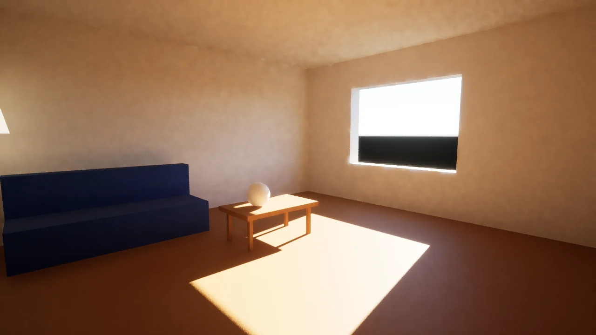
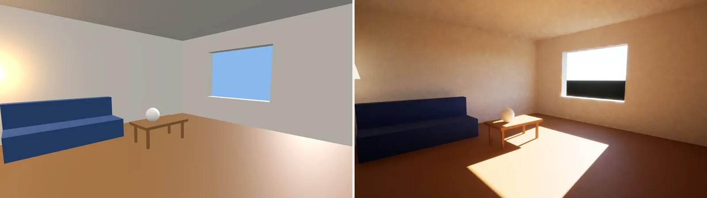

ThreeRT 是一套实时路径追踪引擎，接口写成你熟悉的 three.js 样子。按 README 的说法，你用写 three.js 的方式写场景，场景里的光会在 GPU 的光线追踪硬件上被追踪。它不只是渲染器，也是游戏运行时：同一份场景文件，可以在引擎里跑，也可以作为普通 three.js，在任何浏览器里打开。引擎本体是 Rust 和 wgpu，场景和玩法包是 TypeScript。本页以这个项目为中心。根目录许可证在 2026-11-14（新加坡时间）核到是 MIT，所以下面有导读、README 全文中译，以及许可证原文。macOS 与 iOS 客户端是闭源的；演示用的第三方场景和地图也不随这份 MIT 授权。本页没有编译引擎，没有运行演示，也没有下载客户端。
LICENSE 于 2026-11-14（新加坡时间）经 raw.githubusercontent.com 现场核对为 MIT License（Copyright (c) 2026 Meshy LLC）；GitHub 仓库页同样标注 MIT（spdxId: MIT）。根目录 package.json 的 license 字段也是 MIT。README 同时写明：macOS 和 iOS 客户端可免费使用，但是闭源；素材不进仓库，由安装脚本另行拉取，第三方内容保留各自条款，详见 docs/ASSETS.md。Amazon Lumberyard Bistro 与 Beeple / Kate Anderson 的 Zero-Day 来自 NVIDIA ORCA，CC BY 4.0；东京数据来自 Project PLATEAU、国土地理院与 OpenStreetMap（ODbL），编译后的瓦片按文档不得再发布；OpenStrike 演示里的 cs_assault、de_inferno、de_dust2 是《反恐精英》地图，© Valve，不属于本项目。three.js 是独立开源项目，ThreeRT 与它没有从属关系。下文对 README 作全文中译，并附许可证原文。正文插图只取仓库里作者自己的入门场景静帧（scenes/sun-room.ts 的渲染图），不转载 Bistro、Zero-Day、东京模型，也不转载含 Valve 地图的总览图或任何视频、音频。
site/media/hello/sun-room-rt.webp）。阳光、地面反弹和灯的光，按 README 的说法都来自对场景的追踪。© 2026 Meshy LLC，MIT License（引擎源码与这份文档插图所在仓库文件）。画面里没有人物。一、这是什么
meshy-dev/ThreeRT 的仓库简介写：「硬件光线追踪的 three.js：一套放在 three.js 风格接口后面的实时路径追踪器。引擎是 Rust 与 wgpu，场景和玩法包是 TypeScript。」README 把这句话写得更短：Hardware ray-traced three.js。署名是一项来自 MeshyAI 的研究项目；许可证版权人为 Meshy LLC；GitHub 组织是 meshy-dev。本页没有另行核实公司结构或产品线 ⚠️。
2026-11-14（新加坡时间）打开的仓库首页显示：公开仓库，不是 fork，默认分支 main，侧栏标注 MIT License。创建时间为 2026-11-10 19:22（新加坡时间；上游记录为 2026-11-10T11:22:56.000Z）。页面内嵌数据里，star 约为 161、fork 约为 7、watch 约为 1，提交次数显示为 143，发行版与标签均为 0；这些都会变 ⚠️。主题标签为 game-engine、global-illumination、graphics、metal、path-tracing、ray-tracing、real-time-rendering、rendering、rust、threejs、typescript、voxel、webgpu、wgpu。根目录可见 LICENSE、README.md、package.json（版本 0.1.1，private: true，许可字段为 MIT，开发依赖里的 three.js 为 ^0.187.0）、package-lock.json、rust-toolchain.toml、tsconfig.base.json；目录包括 renderer/、packages/、scenes/、games/、docs/、playground/、site/、tools/、tests/、compare/、ue5/、showcase/ 等。README 写：项目最早在另一个仓库里开始，于 2026-11-10 抽出；文档里的 PR 编号 #1 到 #139，以及其中提到的 cloud/ 和 render-node/，指的是那个旧仓库。本次没有打开那个旧仓库 ⚠️。
官方站点在 README 中列为 threert.dev，应用发布在 threert.app，另有文档、下载页、Discord 与 X 账号 @ThreeRT3D。本页只读了 GitHub 仓库与 raw 文件，没有打开这些站点，也没有下载客户端 ⚠️。
二、三个 RT
README 把名字拆成 Two 部分：Three 是你已经熟悉的接口；RT 是它要补上的三件事。
- Ray tracing（光线追踪）。每一盏灯都会被追踪：阴影、间接光、反射，以及会把房间照亮的发光表面。没有阴影贴图，没有探针，没有光照贴图，也不用烘焙。
- Real time（实时）。按仓库的说法，在制作级场景里、相机还在动的时候，也能跑到 60 fps，例子是 Amazon Lumberyard 的 Bistro 和 Beeple 的 Zero-Day，而且是在笔记本电脑上；不是停下相机之后才慢慢收敛的静帧。帧率与场景规模均为自报，本页未复现 ⚠️。
- Runtime（运行时）。这是一套游戏运行时，不只是渲染器。场景代码和游戏逻辑在引擎里运行；同一份文件也可以作为普通 three.js，在任何浏览器里跑。
这和本站收过的浏览器演示不是同一类东西。Painted Valley 和 Paris Freestyle 是在浏览器里直接跑的 three.js 小品；ThreeRT 的路径追踪发生在原生引擎里，浏览器路径走的是「同一份文件的普通 three.js 预览」。本页没有把这两种预览并排跑过 ⚠️。
三、同一份入门场景
README 给的入门例子体量很小，所有设置保持默认：一盏写成 90,000 lux 的太阳、天空大气、灰泥墙，再补地板、窗子、沙发和灯。完整文件是 scenes/sun-room.ts。光使用物理单位，发光表面本身就是光源。
import { Scene, PerspectiveCamera, Mesh, BoxGeometry, MeshStandardMaterial, DirectionalLight, SkyAtmosphere } from "@threert/scene";
export default function build() {
const scene = new Scene();
const sun = new DirectionalLight(0xffffff, 90000).setSunAngles(28, 100); // lux
scene.add(sun);
scene.environment = new SkyAtmosphere({ sun });
const plaster = new MeshStandardMaterial({ color: 0xd9d4cc, roughness: 0.92 });
const wall = new Mesh(new BoxGeometry(6.6, 3, 0.3), plaster);
wall.position.set(0, 1.5, -3.15);
scene.add(wall);
// ... the rest of the room: a floor, a window, a sofa, a lamp
const camera = new PerspectiveCamera(58, 16 / 9, 0.05, 200);
camera.position.set(-2.3, 1.45, 2.4);
camera.lookAt(1.0, 0.9, -1.2);
scene.add(camera);
return { scene, camera };
}仓库把同一份场景分别交给「按所写直接跑的 three.js」和「全部默认的 ThreeRT」，得到下面这两张静帧。左边是 three.js：窗子是一块平涂的蓝天，地板上没有阳光，墙是均匀的灰。右边是 ThreeRT：阳光从窗口进来，在地板上留下清楚的光斑，桌子投下软影子，墙和天花板带着反弹上来的暖光。这些静帧是仓库自己提供的，本页没有重新渲染 ⚠️。

site/media/hello/sun-room-three.webp（three.js，按所写直接跑）。右：site/media/hello/sun-room-rt.webp（ThreeRT，全部默认）。两张都是仓库静帧，已并排缩小；原图各为 1280×720。© 2026 Meshy LLC，MIT License。四、他们给出的对照数字
README 还把同一份制作级场景，在同一台 Mac 上分别交给两套引擎。three.js 使用了文档所写的全部手段：阴影贴图、基于图像的照明，以及在 WebGPU 上它自己的 SSGI、SSR 和 TRAA。对照图用的是夜间 Bistro 和 Beeple 的 Zero-Day。那两张图是第三方场景的渲染，本页不转载；场景本身的许可见第七节。
仓库给出的夜间 Bistro、1280×720 数字如下。参考图是「无偏的离线渲染，每像素 4,096 个样本，没有降噪器」。方法、每个场景，以及 three.js 仍然领先的地方（文档写小场景大约 1 ms 就能画完），都指向 docs/COMPARE.md。这些数字全部是仓库自报，本页没有重跑，也没有打开那份对照文档的测量脚本 ⚠️。
| 条目 | 单帧耗时 | 相对参考图的误差（ΔE，越低越接近） |
|---|---|---|
| ThreeRT，实时 | 15.5 ms（60 fps） | 3.4 |
| three.js，WebGPU + SSGI + SSR + TRAA | 34.7 ms（29 fps） | 10.1 |
| three.js，调过的 WebGL | 15.9 ms（60 fps） | 12.1 |
README 首页还有一张十二格总览，说明文字写：在一台 Apple M3 Max 上实时运行仓库里的演示，以及用这套引擎做的射击游戏 OpenStrike。那张总览约 4 MB，并且按 README 自己的说明，包含《反恐精英》地图。本页没有转载，也没有观看任何演示或预告 ⚠️。
五、怎么开始用
文档把路径分成三条：下载客户端玩、用 npm 包写场景，以及从源码编译引擎。本页都没有实际操作 ⚠️。
要玩或做游戏，README 请人到 threert.dev/download 下载客户端，平台写的是 macOS（14 或更新，Apple 芯片）以及 iPhone 和 iPad（iOS 17 或更新）。客户端会拉取游戏代码，在设备自己的 GPU 上追踪。例子可以从应用资料库或 threert.app 打开。Mac 应用里带有 threert 命令行：
threert create my-game
cd my-game
threert dev # bundles on save, serves every client on your network, prints a QR code for your phone按文档的说法，在任意浏览器里打开同一个地址，看到的是这份游戏的 three.js 版本。完整步骤指向 threert.dev/docs。
TypeScript 包有三个：@threert/scene（网格、PBR 材质、灯、glTF、物理、体积）、@threert/gameplay（状态、事务性处理器、世界处理器、逐帧脚本、输入、HUD，以及与宿主应用的通道；文档写它是确定性、可回放的）、@threert/voxel（可破坏的体素关卡）。安装示例是：
npm install @threert/scene @threert/gameplaythreert dev 会替你打包这些包。若只要类型、测试，或接入自己的构建流程，也可以从 npm 安装。README 上有 @threert/scene 的 npm 徽章，本页没有核对该包在 npm 上的实际版本 ⚠️。仓库 package.json 自己的版本号是 0.1.1。
从源码编译需要 Rust、Node 24 和 Bun。引擎在 GPU 提供硬件光线查询的地方走硬件（文档写 Metal、Vulkan），没有硬件的地方用软件 BVH。renderer/ 里还有嵌入的 QuickJS，用来跑场景代码；voxel-core 和基于 Rapier 的 physics-core 也可以编成 wasm32。文档给出的命令是：
npm install && bun scripts/setup.ts # assets/ -> the machine's shared asset store, then fetch what is missing
node tools/build-scenes.ts # scenes/*.ts + games -> out/bundles/<id>.js
bun renderer/build.ts # -> renderer/target/release/threert-render
renderer/target/release/threert-render play out/bundles/light-room.js # a game, in a window
renderer/target/release/threert-render render out/bundles/cornell-box.js -o out/cornell.png --spp 32 # a scene, to an image
node tools/three/open.ts scenes/bistro.ts # the same scene in three.js, in your browser窗口操作按 README：拖动环绕，右键拖动平移，滚轮缩放，WASD / QE 飞行，R 重置，P 截图。测试命令为：
npm test && npm run typecheck && (cd renderer && cargo test --release) # scene API, gameplay, runtime and engine tests
npm run test:render # the render test suite, on the GPU六、仓库里列出的演示
下面这些都来自 README 的目录，本页没有运行其中任何一个 ⚠️。
- Light Room：一个小游戏，点击硬币、地板、球、木箱和墙。
- Kabukichō Night：程序生成的新宿夜街，几乎全靠约 120 块发光招牌照明，有雨、雾和一辆出租车。R 下雨，L 打烊，V 切换视点。这块招牌数量是文档自报 ⚠️。
- Bistro：夜间的 Amazon Lumberyard Bistro，分成切片、街区，以及「150 个步行者和 60 辆厢式车」的人群版本。人数是文档自报 ⚠️。
- Zero-Day：Beeple 的 Zero-Day（Measure One），带动画。
- Tokyo：来自 PLATEAU 城市模型的新宿和芝，带实时时刻。
- Voxel level：可破坏的体素城市，有爆炸、掉落的碎块、火和烟。
- Playground：套在实时视口外的 macOS 编辑器，有大纲、实时编辑、Play-in-Editor，以及与 UE5 的 A/B。
仓库里还有一套文档：入门、运行时、材质函数、体素、与 three.js 的对照、相对 UE 5.8 的 Kabukichō 对等、架构与报告、路线图，以及一份给编程智能体用的场景写作 skill（.claude/skills/threert-scene-authoring/SKILL.md）。本页没有把这些文档逐份译出，只在附录中翻译了 README；对照数字也没有打开 docs/COMPARE.md 复核 ⚠️。
七、许可与素材边界
引擎自己的代码，以 2026-11-14 读到的根目录 LICENSE 为准，是 MIT，版权人为 Meshy LLC。这覆盖软件和配套文档。它不覆盖：
- macOS 和 iOS 客户端：免费使用，闭源。
- 素材本身：不提交进仓库。文档写它们大约 1.8 GB，外加约 2 GB 的 ORCA 归档，由
bun scripts/setup.ts拉到机器上的共享目录。这些体积数字是文档自报 ⚠️。 - Amazon Lumberyard Bistro（Amazon Lumberyard，2017）和 Zero-Day（Mike Winkelmann / Beeple 与 Kate Anderson，2019）：来自 NVIDIA ORCA，CC BY 4.0；仓库脚本把 FBX 转成 glTF，并保存各归档自带的许可文件。
- 东京：三维模型来自日本国土交通省的 Project PLATEAU，高程和航拍来自国土地理院，道路和地点 © OpenStreetMap 贡献者（ODbL）。
tools/city的编译器来自 jeantimex/tokyo（MIT）。文档写：编译后的瓦片是 ODbL 下的派生数据库，不得再发布。 - Poly Haven 与 Quaternius 为 CC0；Khronos 的 glTF 示例模型按各模型自己的许可。
- OpenStrike 片段里的 cs_assault、de_inferno、de_dust2 是《反恐精英》地图，© Valve，不属于 ThreeRT，也不属于 OpenStrike 这个项目本身——这句话是 README 写的。
renderer/third_party/里有打过补丁的依赖，各自保留原许可。
欢迎提交 issue 和 pull request。工作流程见 docs/WORKFLOW.md：一项一个 PR，按层级过合并门，PR 采用 squash 合并。本页没有参与或复现这条工作流。
附录一、README 全文中译
以下为 2026-11-14 经 raw.githubusercontent.com 读到的 README.md 全文中译。原文为英文。页首徽章、主题色 logo 与十二格总览图未转载；总览图的说明文字已译出。代码、命令、路径和包名保持原样。文中的帧率、误差、素材体积和演示规模均为原文陈述，不是本页的测量。
ThreeRT
硬件光线追踪的 three.js。
在 three.js 风格的接口后面，放一个实时路径追踪器。你按写 three.js 的方式写场景，场景里的每一盏灯，都会在 GPU 的光线追踪硬件上被追踪，并且以 60 fps 运行。
Website · Apps · Download · Docs · Discord · X
ThreeRT 在一台 Apple M3 Max 上实时运行：本仓库的演示，以及用这套引擎做的射击游戏 OpenStrike。
Three + RT
Three，指你已经熟悉的接口。RT，指它补上的三件事：
- 光线追踪。每一盏灯都会被追踪：阴影、间接光、反射，以及会把房间照亮的发光表面。没有阴影贴图，没有探针，没有光照贴图，也不用烘焙。
- 实时。在制作级场景里、相机在动的时候，也能跑到 60 fps：Amazon Lumberyard 的 Bistro，以及 Beeple 的 Zero-Day，在笔记本电脑上。不是停下之后才慢慢收敛的静帧。
- 运行时。这是一套游戏运行时，不只是渲染器。场景代码和游戏逻辑在引擎里运行；同一份文件也可以作为普通 three.js，在任何浏览器里跑。
入门例子看起来就是对的
用教程体量写一个场景，所有设置都保持默认。
import { Scene, PerspectiveCamera, Mesh, BoxGeometry, MeshStandardMaterial, DirectionalLight, SkyAtmosphere } from "@threert/scene";
export default function build() {
const scene = new Scene();
const sun = new DirectionalLight(0xffffff, 90000).setSunAngles(28, 100); // lux
scene.add(sun);
scene.environment = new SkyAtmosphere({ sun });
const plaster = new MeshStandardMaterial({ color: 0xd9d4cc, roughness: 0.92 });
const wall = new Mesh(new BoxGeometry(6.6, 3, 0.3), plaster);
wall.position.set(0, 1.5, -3.15);
scene.add(wall);
// ... the rest of the room: a floor, a window, a sofa, a lamp
const camera = new PerspectiveCamera(58, 16 / 9, 0.05, 200);
camera.position.set(-2.3, 1.45, 2.4);
camera.lookAt(1.0, 0.9, -1.2);
scene.add(camera);
return { scene, camera };
}左栏是「three.js，按所写直接跑」：一间房间，墙是平的，地板上没有阳光。右栏是「ThreeRT，全部默认」：同一间房间，阳光从窗子进来，墙上有反弹的光。
窗外的太阳、天空、地板反弹上来的光，以及灯的辉光，都来自对场景的追踪。光使用物理单位：太阳是 90,000 lux，发光表面本身就是光源。完整文件是 scenes/sun-room.ts。
与全力开启的 three.js 对照
同一份场景文件，在同一台 Mac 上分别交给两套引擎。three.js 用上了它有的全部手段：阴影贴图、基于图像的照明，以及在 WebGPU 上它自己的 SSGI、SSR 和 TRAA。
对照图（本页未转载）分别是：夜间 Amazon Lumberyard Bistro 在 three.js 中的样子与 ThreeRT 的同一帧；Beeple 的 Zero-Day 在调过的 three.js 中的样子，以及 ThreeRT 的同一帧。
夜间 Bistro，1280 × 720：
- ThreeRT，实时：15.5 ms（60 fps），相对参考图的误差 ΔE 为 3.4（越低越接近）。
- three.js，WebGPU + SSGI + SSR + TRAA：34.7 ms（29 fps），ΔE 为 10.1。
- three.js，调过的 WebGL：15.9 ms（60 fps），ΔE 为 12.1。
参考图是无偏的离线渲染（每像素 4,096 个样本，无降噪器）。方法、每一个场景，以及 three.js 仍然领先的地方（它画小场景大约只要 1 ms），都写在 docs/COMPARE.md。
开始使用
玩，以及做游戏
- 为 macOS（14 或更新，Apple 芯片）或 iPhone 和 iPad（iOS 17 或更新）下载 ThreeRT。客户端会拉取游戏的代码，并在设备自己的 GPU 上追踪。
- 从应用的资料库，或从 threert.app（ThreeRT 应用和游戏的发布处）打开一个例子。
- 用随 Mac 应用附带的
threert命令行写自己的游戏：
threert create my-game
cd my-game
threert dev # bundles on save, serves every client on your network, prints a QR code for your phone在任意浏览器里打开同一个地址，看到的是这份游戏的 three.js 版本。完整步骤见 threert.dev/docs。
软件包
@threert/scene：three.js 风格的场景接口：网格、PBR 材质、灯、glTF 模型、物理、体积。@threert/gameplay：游戏：状态、事务性处理器、世界处理器、逐帧脚本；输入、HUD，以及与运行游戏的应用之间的通道；确定性、可回放。@threert/voxel：可破坏的体素关卡：爆炸、切割，以及会作为刚体脱落的碎块。
npm install @threert/scene @threert/gameplaythreert dev 会替你打包这些包。若只要类型、测试，或接入自己的构建流程，也可以从 npm 安装。
从源码编译引擎
引擎是 Rust 和 wgpu：GPU 有硬件光线查询的地方用硬件（Metal、Vulkan），没有的地方用软件 BVH。你需要 Rust、Node 24 和 Bun。
npm install && bun scripts/setup.ts # assets/ -> the machine's shared asset store, then fetch what is missing
node tools/build-scenes.ts # scenes/*.ts + games -> out/bundles/<id>.js
bun renderer/build.ts # -> renderer/target/release/threert-render
renderer/target/release/threert-render play out/bundles/light-room.js # a game, in a window
renderer/target/release/threert-render render out/bundles/cornell-box.js -o out/cornell.png --spp 32 # a scene, to an image
node tools/three/open.ts scenes/bistro.ts # the same scene in three.js, in your browser在窗口里：拖动环绕，右键拖动平移，滚轮缩放，WASD/QE 飞行，R 重置，P 截图。
npm test && npm run typecheck && (cd renderer && cargo test --release) # scene API, gameplay, runtime and engine tests
npm run test:render # the render test suite, on the GPU本仓库中的演示
- Light Room：一个小游戏：点击硬币、地板、球、木箱和墙。
threert-render play out/bundles/light-room.js - Kabukichō Night：一条新宿夜街，程序生成，几乎全靠约 120 块发光招牌照明；有雨、雾、一辆出租车。
R下雨，L打烊，V视点。threert-render play out/bundles/kabukicho.js - Bistro：夜间的 Amazon Lumberyard Bistro：一个切片、街区，以及 150 个步行者和 60 辆厢式车的人群。见
games/bistro-slice、bistro-district、bistro-crowd。 - Zero-Day：Beeple 的 Zero-Day（Measure One），带动画。见
games/zero-day。 - Tokyo：来自 PLATEAU 城市模型的新宿和芝，带实时时刻。见
games/tokyo、tools/tokyo。 - Voxel level：一座可破坏的体素城市：爆炸、掉落的碎块、火和烟。见
games/voxel-level、docs/VOXEL.md。 - Playground：套在实时视口外的 macOS 编辑器：大纲、实时编辑、Play-in-Editor，以及与 UE5 的 A/B。
bun playground/build.ts && bun playground/run.ts
仓库布局
renderer/：引擎。Rust + wgpu 路径追踪器、实时视口、降噪、后期，以及嵌入的、用来跑场景代码的 QuickJS（threert-render）；voxel-core和physics-core（Rapier）也可以编成 wasm32。packages/：@threert/scene、@threert/gameplay、@threert/voxel。scenes/、games/：参考目录（Cornell box、材质格、Bistro、Zero-Day 等）以及可玩内容。tests/：渲染测试套件（解析性检查与时间性检查）以及 three.js 兼容性集合。tools/：打包、基准与门禁、three.js 对照、东京管线。compare/：入门场景在 three.js 与 ThreeRT 中的并排对照。ue5/：UE5 参考捕捉（Lumen 与 Path Tracer）：用来衡量渲染器的基准真相。playground/：ThreeRT Playground，macOS 编辑器。site/：threert.dev：落地页、下载和文档（应用本身在 threert.app）。
文档
- 入门：客户端、第一个场景、开发循环、软件包。
docs/RUNTIME.md：场景代码如何在引擎里运行：setup、处理器、世界处理器、逐帧脚本、物理。docs/MATERIAL_FUNCTIONS.md：写在材质上的一段 WGSL，路径追踪器在每次命中时都会运行它。docs/VOXEL.md：体素引擎，在一个可破坏关卡上测量过。docs/COMPARE.md：全力开启的 three.js 对 ThreeRT，比帧率和图像质量。docs/PARITY.md：把 Kabukichō 按同一份简报在 UE 5.8 里做一遍，以及引擎从中得到了什么。docs/ARCHITECTURE.md、docs/REPORT.md：这套引擎为之而写的无服务器玩法与渲染运行时。docs/ROADMAP.md：目标、计划，以及每一步量到了什么。- 场景写作 skill（
.claude/skills/threert-scene-authoring/SKILL.md）：和编程智能体一起，对照照片写场景。
贡献
欢迎提交 issue 和 pull request。docs/WORKFLOW.md 说明工作如何落地：一项一个 PR，按层级过合并门，以及 CI。PR 采用 squash 合并。
项目最早在另一个仓库里开始，于 2026-11-10 抽出；文档里的 PR 编号 #1 到 #139，以及其中提到的 cloud/ 和 render-node/ 目录，指的是那个仓库。
许可与致谢
ThreeRT 使用 MIT 许可。macOS 和 iOS 的客户端可免费使用，但是闭源。
素材不在仓库里；bun scripts/setup.ts 会去拉取。第三方内容保留各自条款，列在 docs/ASSETS.md：
- Amazon Lumberyard Bistro：Amazon Lumberyard（2017）。Zero-Day：Mike Winkelmann（Beeple）和 Kate Anderson（2019）。两者都来自 NVIDIA 的 Open Research Content Archive（ORCA），CC BY 4.0，从 FBX 转换成 glTF。
- Tokyo：三维城市模型来自 Project PLATEAU（日本国土交通省 MLIT）；高程和航拍来自国土地理院（GSI）；道路和地点 © OpenStreetMap 贡献者（ODbL）。
tools/city里的编译器来自 jeantimex/tokyo（MIT）。 - Poly Haven 和 Quaternius 的素材是 CC0；glTF 示例模型来自 Khronos。
- 上文 OpenStrike 片段里的地图（cs_assault、de_inferno、de_dust2）是《反恐精英》地图，© Valve，不属于这两个项目中的任何一个。
three.js 是一个独立的开源项目；ThreeRT 与它没有从属关系。
一项来自 MeshyAI 的研究项目。
附录二、LICENSE 原文
以下为 2026-11-14 经 raw.githubusercontent.com 读到的根目录 LICENSE 原文，未作改动。
MIT License
Copyright (c) 2026 Meshy LLC
Permission is hereby granted, free of charge, to any person obtaining a copy
of this software and associated documentation files (the "Software"), to deal
in the Software without restriction, including without limitation the rights
to use, copy, modify, merge, publish, distribute, sublicense, and/or sell
copies of the Software, and to permit persons to whom the Software is
furnished to do so, subject to the following conditions:
The above copyright notice and this permission notice shall be included in all
copies or substantial portions of the Software.
THE SOFTWARE IS PROVIDED "AS IS", WITHOUT WARRANTY OF ANY KIND, EXPRESS OR
IMPLIED, INCLUDING BUT NOT LIMITED TO THE WARRANTIES OF MERCHANTABILITY,
FITNESS FOR A PARTICULAR PURPOSE AND NONINFRINGEMENT. IN NO EVENT SHALL THE
AUTHORS OR COPYRIGHT HOLDERS BE LIABLE FOR ANY CLAIM, DAMAGES OR OTHER
LIABILITY, WHETHER IN AN ACTION OF CONTRACT, TORT OR OTHERWISE, ARISING FROM,
OUT OF OR IN CONNECTION WITH THE SOFTWARE OR THE USE OR OTHER DEALINGS IN THE
SOFTWARE.